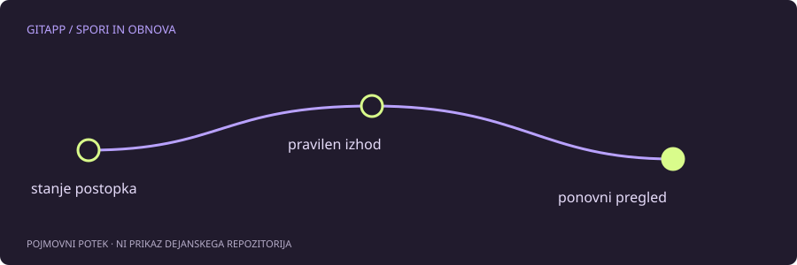

Podobni simptomi, različni postopki
Datoteka s sporom se lahko pojavi med združevanjem, preurejanjem, ponovno uporabo potrditve ali razveljavljanjem. Videz označevalcev je lahko podoben, vendar imajo postopki drugačen namen in različne ukaze za nadaljevanje oziroma prekinitev.
Če ukaz iz tuje rešitve ne deluje, ni nujno treba dodati močnejše možnosti. Morda rešuješ drug postopek. Prvi korak je git status, ki pogosto izrecno pove, kaj je v teku in kaj še manjka.
Zapiši izhodišče
Pred prekinitvijo preveri, katere spremembe so tvoje in kdaj so nastale. Če si med razreševanjem napisal uporabno vsebino, ki jo želiš ohraniti, jo po potrebi kopiraj izven repozitorija. To ni isto kot pripraviti datoteko v indeks.
git status
git diff
git diff --cachedNe izvažaj teh izpisov v javni obrazec, če vsebujejo skrivnosti, osebne podatke ali zasebno kodo. Za pomoč je pogosto dovolj navesti ime postopka in anonimiziran opis stanja.
Ujemanje postopka in ukaza
| Postopek | Nadaljevanje | Prekinitev |
|---|---|---|
| Združevanje | git merge --continue | git merge --abort |
| Preurejanje | git rebase --continue | git rebase --abort |
| Razveljavljanje | git revert --continue | git revert --abort |
| Ponovna uporaba potrditve | git cherry-pick --continue | git cherry-pick --abort |
Tabela ni navodilo, da vse ukaze preizkusiš zaporedoma. Uporabi samo vrstico, ki ustreza dejanskemu stanju. Pred nadaljevanjem morajo biti zahtevani spori ustrezno razrešeni in pripravljeni.
Prekinitev in opustitev nista vedno isto
Nekateri postopki poznajo tudi --quit. Ta možnost ni nujno enaka --abort: lahko odstrani stanje postopka, ne da bi obnovila pričakovano izhodiščno vsebino. Zato možnosti ne zamenjuj zgolj po podobnem pomenu besed.
Pri združevanju je dodatna težava nepotrjeno delo, ki je obstajalo pred začetkom. Dokumentacija opozarja, da povrnitev v nekaterih takih primerih ne more v celoti obnoviti prejšnjega stanja. Načrt za prekinitev je zato najbolje pripraviti pred začetkom, ne šele po več poskusih.
Po izhodu preveri rezultat
Uspešen izhod ni samo odsotnost opozorila. Preveri vejo, zadnjo potrditev, delovne datoteke in pripravo. Če potrebuješ nadaljnjo pomoč, zapiši to novo stanje, ne starega sporočila.
Pomočnik GitApp ne ugiba o trenutnem postopku iz celotnega dnevnika in ne izvaja prekinitve namesto tebe. Njegova naloga je spomniti, da mora pravilna odločitev temeljiti na prepoznanem stanju, ne na najglasnejšem opozorilu v terminalu.
Vir in obseg
Referenca: uradni priročnik za git-status. Primeri so pripravljeni za učenje in niso opis posega v dejanski projekt. Preberi način preverjanja.